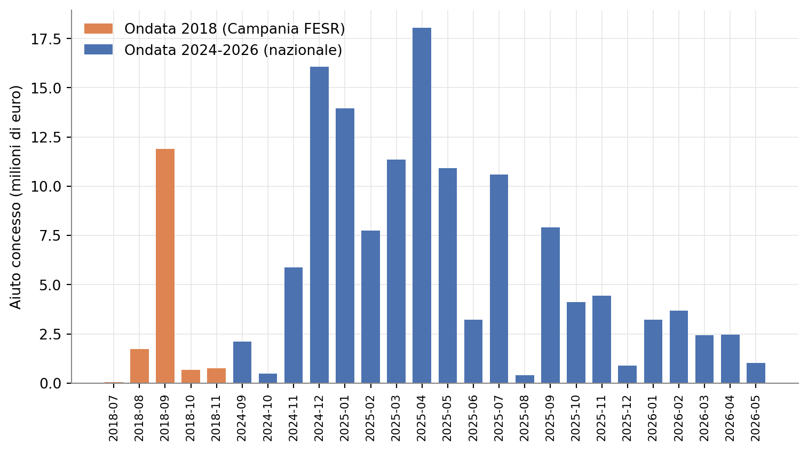
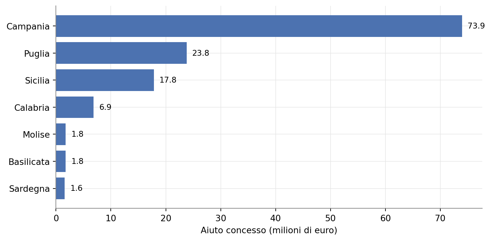
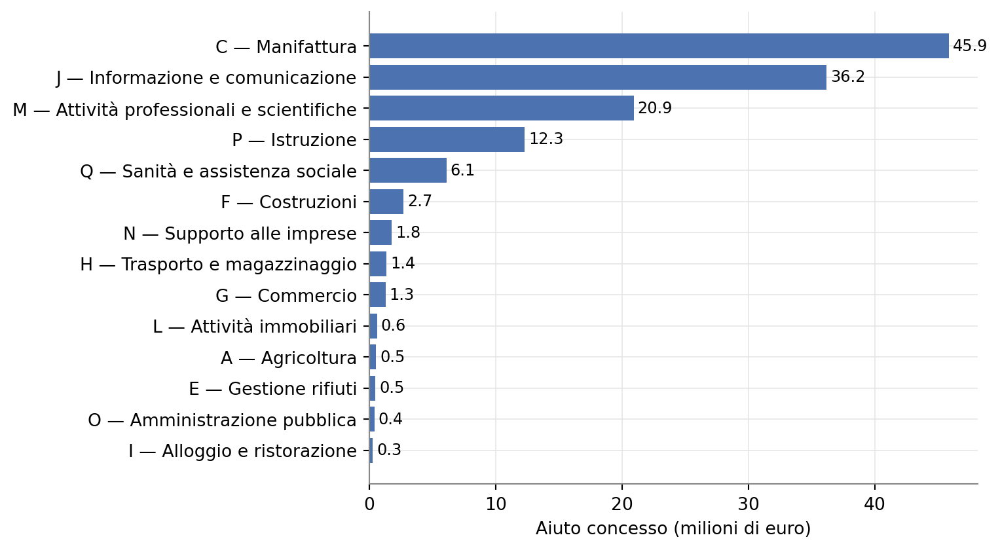

Scoperta imprenditoriale
Una misura di sostegno alla R&S nel Mezzogiorno tra logica di sovvenzione e logica bancaria
Paolo Volterra ![]()
La misura “Scoperta imprenditoriale”, finanziata dal Programma Nazionale Ricerca, Innovazione e Competitività per le regioni meno sviluppate (RIC 2021-27) e gestita dal Ministero delle Imprese e del Made in Italy, sostiene progetti di ricerca industriale e sviluppo sperimentale nelle regioni del Mezzogiorno. Sulla base dei dati del Registro Nazionale degli Aiuti di Stato si ricostruisce l’universo dei beneficiari, la distribuzione territoriale e settoriale degli aiuti, e il meccanismo di selezione delle domande. La misura combina una componente di sovvenzione a fondo perduto con una componente di prestito agevolato, gestita da un soggetto bancario, e utilizza indicatori di bilancio assimilabili a un’analisi di affidamento creditizio come filtro di accesso alla graduatoria. Il documento discute questa impostazione alla luce della letteratura sul finanziamento pubblico dell’innovazione e del quadro concettuale del processo di scoperta imprenditoriale (Entrepreneurial Discovery Process) proprio delle strategie di specializzazione intelligente, individuando i limiti informativi che allo stato attuale impediscono di valutare l’effettiva selettività del meccanismo.
scoperta imprenditoriale, RIC 2021-27, MIMIT, aiuti di Stato, Fondo per la Crescita Sostenibile, RNA, smart specialisation, entrepreneurial discovery process, Mezzogiorno
Versione citabile su Zenodo, con il PDF: doi.org/10.5281/zenodo.22067714. Il testo di questa pagina include le correzioni ai dati settoriali fatte dopo la pubblicazione del PDF.
1 Introduzione
“Scoperta imprenditoriale” è una misura di sostegno agli investimenti in ricerca industriale e sviluppo sperimentale, istituita con decreto del Ministero delle Imprese e del Made in Italy (MIMIT) del 13 luglio 2023 nell’ambito dell’Azione 1.1.4 del Programma Nazionale Ricerca, Innovazione e Competitività 2021-2027 (RIC 2021-27), rivolto alle regioni italiane meno sviluppate: Basilicata, Calabria, Campania, Molise, Puglia, Sardegna e Sicilia. La dotazione prevista dal decreto istitutivo è di 300 milioni di euro.
Il nome della misura richiama un concetto tecnico proprio delle politiche europee di specializzazione intelligente: l’entrepreneurial discovery process, ovvero il processo attraverso cui un territorio individua, in un confronto strutturato tra imprese, ricerca e amministrazione, le traiettorie tecnologiche nelle quali può costruire un vantaggio competitivo. Il presente documento ricostruisce la misura sotto tre profili distinti: chi ne beneficia e con quale distribuzione territoriale e settoriale; come funziona il meccanismo di selezione delle domande; e in che misura la sua architettura finanziaria, che combina sovvenzione e prestito, la avvicina a una valutazione di tipo creditizio più che a un contributo pubblico in senso proprio.
2 I dati: universo dei beneficiari
L’analisi si basa sui dati pubblicati nel Registro Nazionale degli Aiuti di Stato (RNA), che riporta ogni concessione di aiuto individuale insieme all’importo nominale, all’equivalente sovvenzione (l’“aiuto” propriamente detto), al beneficiario, alla data e allo strumento utilizzato.
I record relativi a “Scoperta imprenditoriale” si dividono in due gruppi temporalmente e istituzionalmente distinti, senza continuità diretta tra loro:
- una prima ondata, tra luglio e novembre 2018, concentrata quasi interamente in agosto-settembre, riconducibile a uno strumento regionale promosso dall’Autorità di Gestione del POR FESR Campania 2014-2020, per 88 operazioni e 15,1 milioni di euro;
- la misura nazionale attuale, avviata nel settembre 2024 e tuttora in corso alla data di aggiornamento dei dati (maggio 2026), per 1.012 operazioni e 130,9 milioni di euro, con un picco nell’aprile 2025.
I due programmi hanno codici di aiuto europei distinti (SA.51362 per l’ondata 2018, SA.111204 per la misura nazionale), enti gestori diversi — l’Autorità di Gestione del POR FESR Campania la prima, il MIMIT con Mediocredito Centrale la seconda — e architetture finanziarie diverse: la sola misura nazionale prevede una componente di prestito agevolato accanto alla sovvenzione. Condividono il fondo FESR e il lessico europeo della specializzazione intelligente, non un regime, un ente o un disegno comuni. L’analisi che segue riguarda esclusivamente la misura nazionale; l’ondata 2018 è descritta a parte, nel riquadro seguente.

Figura 1: Aiuto concesso per mese di concessione, due ondate distinte (2018 e 2024-2026)
L’universo analizzato — misura nazionale SA.111204 — conta 1.012 concessioni a 261 beneficiari distinti, per un aiuto totale di 130,9 milioni di euro a fronte di un valore nominale erogato di 281,6 milioni di euro — la differenza tra i due importi è dovuta alla componente di prestito, discussa più avanti, il cui equivalente sovvenzione è pari solo al vantaggio di tasso agevolato e non al capitale erogato.
2.1 Beneficiari e territorio
Le piccole e medie imprese sono la categoria prevalente: 207 beneficiari per 818 operazioni e 92,0 milioni di euro, pari al 70% dell’aiuto totale. Le grandi imprese contano 28 beneficiari per 115 operazioni e 16,9 milioni di euro (13%). Un terzo gruppo, non classificato per dimensione nei dati RNA e riconducibile prevalentemente a enti pubblici di ricerca — università, Consiglio Nazionale delle Ricerche — riceve 22,1 milioni di euro su 79 operazioni e 26 beneficiari (17%), con un importo medio per beneficiario (850 mila euro) quasi doppio rispetto a quello delle PMI (444 mila euro).
| Tipo beneficiario | Operazioni | Beneficiari | Aiuto (M€) | Quota aiuto |
|---|---|---|---|---|
| PMI | 818 | 207 | 92,0 | 70% |
| Grande impresa | 115 | 28 | 16,9 | 13% |
| Non classificato (enti pubblici/ricerca) | 79 | 26 | 22,1 | 17% |
| Totale | 1.012 | 261 | 130,9 | 100% |
Tabella 1: Ripartizione dell’aiuto per tipo di beneficiario, misura nazionale
La concentrazione tra beneficiari è moderata: i primi dieci beneficiari assoluti, dominati da enti di ricerca pubblici (il CNR da solo riceve 3,16 milioni di euro), pesano per il 15% del totale. Limitando il confronto alle sole imprese private (PMI e grandi imprese), la Tabella 2 riporta le prime dieci per aiuto ricevuto: complessivamente 15,1 milioni di euro su 108,9 milioni assegnati alle imprese private, pari al 14% — una distribuzione ampia, senza singoli beneficiari dominanti.
| # | Impresa | Regione | Tipo | Aiuto (€) | Nominale (€) |
|---|---|---|---|---|---|
| 1 | MagicMotorsport S.r.l. | Sicilia | PMI | 1.759.090 | 3.940.762 |
| 2 | Istituto Santa Chiara S.r.l. | Puglia | PMI | 1.747.257 | 3.734.400 |
| 3 | Magaldi Power S.p.A. | Campania | PMI | 1.692.242 | 3.149.642 |
| 4 | LAER S.p.A. | Campania | Grande impresa | 1.620.473 | 3.387.736 |
| 5 | Cartesar S.p.A. | Campania | Grande impresa | 1.535.097 | 3.997.094 |
| 6 | SIFI S.p.A. | Sicilia | Grande impresa | 1.520.545 | 3.550.039 |
| 7 | Vantea Smart S.p.A. | Campania | PMI | 1.351.005 | 3.594.117 |
| 8 | I.M.C.A. S.p.A. | Campania | PMI | 1.323.204 | 1.840.320 |
| 9 | Chetta S.r.l. | Puglia | PMI | 1.270.906 | 2.897.088 |
| 10 | Mal&Ù S.r.l. | Puglia | PMI | 1.238.033 | 2.579.524 |
Tabella 2: Prime dieci imprese private per aiuto ricevuto
Un incrocio con i dati di OpenCoesione sui progetti finanziati dai fondi di coesione (278 progetti per 312,4 milioni di euro di finanziamento) è stato condotto per titolo del progetto sull’insieme delle due ondate e non ancora scorporato per singola misura: il confronto va quindi letto come coerente in ordine di grandezza con il valore nominale RNA complessivo tra le due ondate (304,8 milioni di euro), non come verifica puntuale della sola misura nazionale. Il codice fiscale del beneficiario è valorizzato solo nel 17% dei casi; dove presente, riguarda quasi sempre enti pubblici di ricerca, non imprese.
La distribuzione territoriale è fortemente concentrata: la Campania riceve il 58% dell’aiuto (73,9 milioni di euro), seguita da Puglia (19%), Sicilia (14%) e Calabria (5%). Questa concentrazione è coerente con la natura della misura, riservata alle regioni meno sviluppate, e in particolare con il peso demografico ed economico della Campania in quel gruppo.

Figura 2: Aiuto concesso per regione, operazioni a regione singola (milioni di euro), misura nazionale
Sul piano settoriale, la manifattura e i servizi legati all’informazione e alla comunicazione assorbono insieme il 63% dell’aiuto classificato, coerentemente con la vocazione di ricerca e innovazione della misura. Il registro riporta il settore in tre forme (classificazione NACE 2 con o senza indicazione della revisione, e NACE 2.1 per le concessioni più recenti); poiché la revisione 2.1 ha spostato le lettere di alcune sezioni, la sezione è ricostruita dalla divisione numerica a due cifre secondo lo schema NACE 2. Restano prive di classificazione sei componenti su 1.012, senza importo valorizzato.

Figura 3: Aiuto concesso per sezione NACE 2, ricostruita dalla divisione numerica (milioni di euro), misura nazionale
La distribuzione degli importi per singola operazione è fortemente asimmetrica ma priva di valori estremi: il valore mediano è di 77.083 euro, il novantesimo percentile è di 310.893 euro e il valore massimo, pari a 1.363.925 euro, rappresenta circa l’1% del totale erogato. Nessuna singola operazione domina quindi la misura.
3 Struttura finanziaria: sovvenzione e prestito
Un elemento distintivo della misura riguarda la natura degli strumenti utilizzati. Il valore nominale erogato si divide in due componenti, riportate nella Tabella 3: 158,3 milioni di euro, pari al 56% del totale, sono erogati come prestito o anticipazione rimborsabile; i restanti 123,3 milioni di euro, pari al 44%, sono sovvenzioni o contributi in conto interessi. L’etichetta RNA «Sovvenzione/Contributo in conto interessi» è una categoria aggregata del registro: il decreto istitutivo prevede, per la componente non a prestito, un contributo diretto alla spesa e non un autonomo contributo in conto interessi [1].
| Strumento | Operazioni | Aiuto (equivalente sovvenzione, M€) | Nominale (valore facciale, M€) |
|---|---|---|---|
| Prestito / anticipo rimborsabile | 465 | 23,7 (18%) | 158,3 (56%) |
| Sovvenzione / contributo in conto interessi | 541 | 107,2 (82%) | 123,3 (44%) |
| Totale | 1.006 | 130,9 | 281,6 |
Tabella 3: Composizione del valore erogato per strumento, misura nazionale
Poiché l’equivalente sovvenzione di un prestito agevolato riflette solo il vantaggio del tasso sotto il livello di mercato e non il capitale, la componente a prestito genera un aiuto equivalente relativamente basso (23,7 milioni di euro, il 18% dell’aiuto totale) a fronte di un impegno finanziario per il beneficiario molto più consistente.
Più della metà del valore facciale erogato dalla misura, dunque, è debito da restituire, non un contributo a fondo perduto.
La gestione operativa della misura — istruttoria, erogazione, controlli, monitoraggio — è affidata per convenzione a Banca del Mezzogiorno-Mediocredito Centrale S.p.A., in qualità di mandataria di un raggruppamento di operatori economici. La misura si inserisce nel Fondo per la Crescita Sostenibile, che eredita un impianto risalente alla legge 46/1982 istitutiva del Fondo Innovazione Tecnologica, storicamente gestito da un istituto di credito e strutturato come fondo rotativo, nel quale i rimborsi dei prestiti concorrono a rifinanziare i cicli successivi. La continuità esatta di questa architettura nel tempo e l’evoluzione dei criteri di valutazione utilizzati non sono stati oggetto di verifica su fonte primaria in questo lavoro e restano un tema aperto.
4 Il meccanismo di selezione delle domande
L’accesso alla misura è avvenuto tramite un unico sportello nazionale, aperto il 7 febbraio 2024 con procedura a graduatoria per ordine di arrivo (“click day”), esaurito lo stesso giorno con 224 domande presentate. La graduatoria di ammissione alla fase istruttoria, pubblicata con decreto direttoriale del 28 febbraio 2024, ha ammesso 196 domande e ne ha escluse 28 per esaurimento delle risorse disponibili, pur essendo tutte formalmente idonee.
Il criterio unico di ordinamento in questa fase è la solidità economico-finanziaria del proponente, calcolata su cinque indicatori di bilancio riferiti agli ultimi due esercizi approvati e autodichiarati dalle imprese in sede di domanda, riportati nella Tabella 4.
| Indicatore | Formula | Soglia / verso |
|---|---|---|
| Capacità di rimborso | (ammortamenti e svalutazioni + utile o perdita d’esercizio, media) / rata di rimborso del finanziamento | rapporto minimo 0,8, equivalente a 3,2 punti, a pena di irricevibilità |
| Copertura finanziaria delle immobilizzazioni | (mezzi propri + debiti a medio-lungo termine) / immobilizzazioni | più alto, meglio |
| Indipendenza finanziaria | mezzi propri / totale passivo | più alto, meglio |
| Incidenza oneri finanziari su fatturato | oneri finanziari / fatturato | più basso, meglio |
| Incidenza gestione caratteristica su fatturato | margine operativo lordo / fatturato | più alto, meglio |
Tabella 4: I cinque indicatori di solidità economico-finanziaria che ordinano la graduatoria di accesso
Il punteggio tecnico e qualitativo del progetto — fattibilità, grado di innovazione, impatto atteso — entra nella valutazione solo dopo l’ammissione all’istruttoria e non ha influito sull’ordine di accesso allo sportello. Le eventuali maggiorazioni previste per parità di genere e sostenibilità ambientale sono anch’esse escluse dal calcolo del punteggio di graduatoria per espressa previsione del decreto attuativo.
Il primo dei cinque indicatori, la capacità di rimborso, è nella sostanza un indice di copertura del servizio del debito (Debt Service Coverage Ratio), lo stesso tipo di rapporto utilizzato dagli istituti di credito nella valutazione di un affidamento. Gli altri quattro indicatori corrispondono a rapporti patrimoniali e reddituali standard dell’analisi di bilancio, con un’eccezione: l’incidenza degli oneri finanziari è rapportata al fatturato anziché al margine operativo lordo o al risultato operativo, scelta che consente a un’impresa con fatturato elevato e margini ridotti di superare più facilmente la soglia, pur avendo una capacità reale limitata di sostenere il costo del debito con la propria redditività operativa.
Rispetto a una valutazione creditizia bancaria in senso proprio, il meccanismo presenta alcuni limiti strutturali: si basa solo su dati storici, senza proiezioni sul progetto specifico da finanziare; i dati di bilancio sono autodichiarati e non verificati prima dell’ammissione; non è prevista alcuna garanzia; non risulta un controllo sistematico dell’esposizione debitoria complessiva del proponente presso il sistema bancario. Soprattutto, gli indicatori operano come un filtro binario di accesso alla graduatoria e non come strumento di dimensionamento dell’importo erogabile, che è invece determinato dai costi ammissibili del progetto e dai massimali previsti dalla normativa europea sugli aiuti di Stato: un’impresa appena sopra la soglia minima e un’impresa con indicatori molto più solidi ricevono, a parità di costi di progetto, lo stesso trattamento dimensionale — una differenza sostanziale rispetto alla prassi bancaria, nella quale il merito di credito modula sia l’accesso sia l’importo e il prezzo del finanziamento.
Un aspetto non chiarito dai documenti disponibili riguarda la differenza tra il numero di domande ammesse alla graduatoria nazionale (196) e il numero di beneficiari PMI effettivamente presenti nei dati RNA per la misura nazionale (circa 290): la differenza potrebbe riflettere sportelli o riserve territoriali distinti da quello coperto dalla graduatoria esaminata, ma questa ipotesi non è stata verificata su fonte ulteriore.
5 Il processo di scoperta imprenditoriale come cornice interpretativa
Il nome della misura rinvia esplicitamente al concetto di entrepreneurial discovery process (EDP), elaborato nell’ambito delle strategie europee di specializzazione intelligente [2], [3]. L’EDP descrive un processo, non un evento: un confronto strutturato tra imprese, università, centri di ricerca e amministrazioni pubbliche, finalizzato a individuare non genericamente un settore ma una traiettoria tecnologica concreta nella quale un territorio possiede o può costruire un vantaggio competitivo, attraverso un ciclo che comprende analisi del contesto, confronto tra attori, sperimentazione, selezione, investimento e revisione delle priorità sulla base dei risultati [4].
La letteratura distingue un EDP sostanziale, che coinvolge attori diversi compresi i nuovi entranti, produce combinazioni originali tra capacità territoriali e opportunità di mercato, e modifica effettivamente le priorità di policy sulla base dell’evidenza, da un EDP meramente rituale, nel quale la consultazione degli stakeholder non produce conseguenze verificabili sulle scelte successive [5], [6]. Un rischio ricorrente, discusso sia nella letteratura sulla governance della specializzazione intelligente [7], [8] sia in casi di studio su singoli paesi [9], è la cattura del processo da parte di attori già organizzati, capaci di orientare le priorità e i criteri dei bandi verso ambiti nei quali sono già attivi.
Applicata a “Scoperta imprenditoriale”, questa cornice pone una domanda specifica: se la misura amplii effettivamente le opportunità e le capacità innovative del territorio, oppure se consenta ad attori già affermati di orientare a proprio vantaggio le priorità e i criteri di accesso. La coincidenza tra soggetti che partecipano alla definizione delle priorità di policy e soggetti che ne beneficiano non costituisce di per sé una prova di cattura: le imprese più competenti possono essere al tempo stesso interlocutori qualificati nella fase di definizione delle priorità e proponenti più solidi in fase di selezione. Per sostenere un’interpretazione di cattura servirebbero elementi ulteriori — accesso privilegiato alla definizione dei criteri, concentrazione reiterata dei finanziamenti sugli stessi soggetti nei cicli successivi, esclusione sistematica di nuovi entranti, scarsa trasparenza nelle motivazioni di ammissione o esclusione [10], [11]. Nessuno di questi elementi è verificabile con i dati attualmente disponibili per questa misura, in assenza di informazioni pubbliche sui partecipanti alle fasi di consultazione che hanno preceduto l’adozione del decreto istitutivo.
6 Il finanziamento pubblico dell’innovazione tra sussidio e credito
L’architettura osservata — selezione tramite indicatori di bilancio di tipo bancario, componente di prestito pari a oltre metà del valore erogato, gestione affidata a un istituto di credito — trova riscontro in un filone di letteratura sul finanziamento pubblico dell’innovazione. Cowling, Ughetto e Lee analizzano gli effetti del debito e delle garanzie pubbliche sul credito alle imprese ad alta tecnologia, un contesto direttamente pertinente alla componente di prestito della misura [12]. Bianchi, Murtinu e Scalera propongono di leggere i sussidi alla ricerca come segnali duali, capaci cioè di certificare la qualità di un’impresa anche verso soggetti terzi, funzione distinta dal semplice trasferimento di risorse [13]. Lerner offre una critica classica al ruolo dello Stato come investitore di capitale di rischio, evidenziando la tensione tra una logica di selezione prudenziale, tipica del credito bancario, e l’obiettivo dichiarato di finanziare innovazione ad alto rischio [14]; Cumming, Grilli e Murtinu confrontano capitale di rischio pubblico e privato in Europa, incluso il caso italiano [15]. Lerner e Nanda [16] e Bloom, Van Reenen e Williams [17] offrono rassegne più ampie degli strumenti di politica dell’innovazione, utili per collocare “Scoperta imprenditoriale” — un ibrido tra sovvenzione e prestito agevolato con gate creditizio — all’interno della tassonomia generale di sussidi diretti, crediti d’imposta, prestiti agevolati e garanzie pubbliche.
Non risultano, nella letteratura accademica indicizzata consultata, studi che trattino specificamente il meccanismo italiano dello sportello a graduatoria per ordine di arrivo (“click day”) combinato con un filtro di solidità economico-finanziaria, né la genealogia storica di questo impianto a partire dalla legge 46/1982. È possibile che questo filone sia trattato solo da letteratura non accademica di lingua italiana, non ricompresa in questa rassegna.
7 Un principio di lettura: l’obbligo di restituzione come disincentivo
Il fatto che oltre metà del valore nominale erogato dalla misura debba essere restituito introduce un elemento rilevante per l’interpretazione del meccanismo. Un’impresa che ottenesse il finanziamento senza una reale intenzione o capacità di realizzare il progetto resterebbe comunque debitrice del capitale e degli interessi maturati. Questo costituisce un disincentivo all’accesso puramente opportunistico alla misura, assente in un contributo interamente a fondo perduto, e attenua, senza eliminarla, la portata di un’ipotesi di cattura delle politiche da parte di beneficiari privi di reale merito progettuale.
Questo principio regge però solo nella misura in cui l’obbligo di restituzione sia effettivamente fatto rispettare. Non è stato possibile verificare, sulla base delle fonti disponibili, il tasso di revoca o decadenza dei finanziamenti concessi, il tasso di default sui piani di rimborso, né l’eventuale ricorso a ristrutturazioni del debito: se l’attività di recupero fosse debole, il disincentivo resterebbe solo teorico. Allo stesso modo non è stato possibile verificare se i finanziamenti erogati nell’ambito della misura confluiscano nella Centrale dei Rischi gestita dalla Banca d’Italia, elemento che inciderebbe sulla visibilità dell’esposizione debitoria complessiva dei beneficiari presso il sistema bancario.
8 Conclusioni e questioni aperte
I dati del Registro Nazionale degli Aiuti di Stato descrivono, per la misura nazionale SA.111204, un intervento di dimensioni consistenti (130,9 milioni di euro di aiuto su 281,6 milioni di valore nominale, 261 beneficiari), fortemente concentrato nel Mezzogiorno e in particolare in Campania, con una distribuzione tra beneficiari moderatamente ampia e priva di concentrazioni estreme. La sua architettura finanziaria, che combina sovvenzione e prestito agevolato gestito da un istituto bancario, e il meccanismo di selezione delle domande, basato su indicatori di bilancio di tipo creditizio utilizzati come filtro binario di accesso, la avvicinano più a una logica di affidamento bancario semplificato che a un contributo pubblico in senso tradizionale — pur restando, per i limiti già indicati (assenza di proiezioni, di garanzie, di verifica ex ante dei dati dichiarati, di modulazione dell’importo in base al merito), una versione parziale e non completa di quella logica.
Restano aperte, allo stato attuale della ricerca, alcune questioni che richiederebbero fonti non disponibili in questo lavoro:
- l’effettivo tasso di revoca, decadenza o default sui prestiti concessi, necessario per valutare se l’obbligo di restituzione costituisca un disincentivo reale o solo teorico;
- la governance del processo di scoperta imprenditoriale che ha preceduto il decreto istitutivo del 2023, in assenza della quale non è possibile verificare empiricamente l’ipotesi di cattura discussa nella cornice EDP;
- la continuità storica esatta dell’architettura prestito-sovvenzione gestita da un soggetto bancario, dalla legge 46/1982 del 1982 fino all’assetto attuale del Fondo per la Crescita Sostenibile;
- la ricostruzione puntuale dei punteggi di graduatoria a partire dai bilanci reali delle imprese beneficiarie, resa impraticabile dall’assenza di una chiave identificativa comune tra la graduatoria pubblicata, che è anonimizzata, e l’elenco dei beneficiari nel Registro Nazionale degli Aiuti di Stato.
Trasparenza sull’uso dell’intelligenza artificiale
L’uso di strumenti di intelligenza artificiale generativa è dichiarato esplicitamente in quanto parte del processo di lavoro seguito nella redazione del presente documento. Tali strumenti sono stati impiegati a supporto della lettura, della sintesi, della riorganizzazione argomentativa e della revisione testuale, sempre nell’ambito di un processo pienamente controllato dall’autore.
La responsabilità per le fonti utilizzate, le analisi condotte, le verifiche effettuate, le interpretazioni proposte e le conclusioni formulate resta interamente in capo all’autore.
L’intelligenza artificiale è stata utilizzata come ambiente di supporto cognitivo ed editoriale, non come fonte primaria, autore autonomo o sostituto del giudizio critico.
9 Referenze
10 Riutilizzare
CC-BY-4.0